Sample 2020_18 and 2020_23
Build a common dataset
Audrey
2022-12-14
Context
The goal of this script is to compare single-cell RNA sequencing (scRNA-Seq) data from two mouse tumors :
- The first mouse was carrying a dNF. This tumor has been split. One part has been used to generate scRNA-Seq data : dataset 2020_18. The other has been processed in order to be grafted on a nude recipient.
- The nude recipient developed a MPNST from the grafted tumor cells. scRNA-Seq data has been generated from cells from this tumor : dataset 2020_23.
In this file, we generate a Seurat object containing both datasets, from their respective raw count matrices. We will run the following steps :
- merge the dataset using the
base::mergefunction - removal of cells with few genes or few UMI
- removal of genes having counts in less than 5 cells
- normalization with
LogNormalize, then doublets detection usingscran hybridandscDblFindermethod, and doublet cells removal - normalization with
LogNormalize, for only the remaining cells - cell cycle and cell type annotation
- dimensionality reduction using
PCA - batch-effect removal using
harmony
Set environment
library(dplyr)
library(ggplot2)
library(patchwork)We load the parameters :
input_dir = params$input_dir
out_dir = params$out_dirData are stored there : . Input count matrices come from there : /home/aurelien/Documents/Audrey/git_analysis/MPNST_paper/analysis/nextflow/graft/input/
save_name = "donor18_recipient23"We will load two datasets :
sample_info = data.frame(project_name = c("2020_18", "2020_23"),
tumor_type = c("dyNF", "MPNST"),
sample_identifiant = c("donor", "recipient"),
color = c("#1B9E77", "#D95F02"), # from RColorBrewer::brewer.pal("Dark2", n = 3)
stringsAsFactors = FALSE)
save(sample_info, file = paste0(out_dir, "/", save_name, "_sample_info.rda"))
ggplot2::ggplot(sample_info) +
ggplot2::geom_label(aes(x = project_name, y = 0, label = project_name, fill = project_name)) +
ggplot2::geom_text(aes(x = project_name, y = 1, label = sample_identifiant)) +
ggplot2::lims(y = c(-1, 2)) +
ggplot2::scale_fill_manual(values = sample_info$color, breaks = sample_info$project_name) +
ggplot2::theme_void() +
ggplot2::theme(legend.position = "none")
We load the markers and specific colors for each cell type :
cell_markers = aquarius:::cell_markers
cell_markers[["keratinocytes"]] = NULL
lengths(cell_markers)## tumor cells macrophages cDC
## 129 51 66
## mDC pDC T cells
## 25 99 26
## NK cells neutrophils mast cells
## 24 12 26
## B cells endothelial cells fibroblasts
## 22 60 109
## mural cells skeletal muscle cells
## 59 42Here are custom colors for each cell type :
color_markers = aquarius:::color_markers
color_markers = color_markers[names(cell_markers)]
save(color_markers, file = paste0(out_dir, "/color_markers.rda"))
data.frame(cell_type = names(color_markers),
color = unlist(color_markers)) %>%
ggplot2::ggplot(., aes(x = cell_type, y = 0, fill = cell_type)) +
ggplot2::geom_point(pch = 21, size = 5) +
ggplot2::scale_fill_manual(values = unlist(color_markers), breaks = names(color_markers)) +
ggplot2::theme_classic() +
ggplot2::theme(legend.position = "none",
axis.line = element_blank(),
axis.title = element_blank(),
axis.ticks = element_blank(),
axis.text.y = element_blank())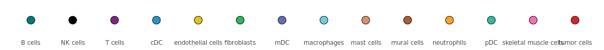
Here a the markers to make a dotplot :
dotplot_markers = list("pDC" = c("Siglech", "Ly6d"),
"mDC" = c("Cd209a", "Mgl2", "Olfm1"),
"cDC" = c("Xcr1", "Itgae"),
"mast cells" = c("Tpsb2", "Cpa3", "Cma1", "Mcpt4"),
"neutrophils" = c("S100a8", "S100a9", "Cxcl2"),
"B cells" = c("Cd79a", "Cd79b", "Ly6d"),
"NK cells" = c("Xcl1", "Klre1", "Klrb1c"),
"T cells" = c("Cd4", "Cd8a", "Cd3e", "Cd3d"),
"macrophages" = c("Adgre1", "Csf1r", "Mafb"),
"skeletal muscle cells" = c("Acta1", "Tnnc2", "Tnnt3", "Myl1"),
"mural cells" = c("Notch3", "Rgs5", "Pdgfrb"),
"endothelial cells" = c("Egfl7", "Cdh5", "Pecam1"),
"fibroblasts" = c("Dcn", "Mgp"),
"tumor cells" = c("Plp1", "Ank3", "Gas1", "Pdgfrb", "Kcna1", "Sox10", "Sox9", "Pdgfra"))
cell_type_levels = names(dotplot_markers)These is a parameter for different functions :
cl = aquarius::create_parallel_instance(nthreads = 3L)Combine datasets
In this section, we load the raw count matrix for each sample. Then,
we applied an empty droplets filtering. Then, we use
base::merge function to make a combined Seurat object
containing all datasets. For each sample, identifier corresponds to the
sample_info$sample_identifiant value.
data_paths = paste0(input_dir, "/", sample_info$project_name)
names(data_paths) = sample_info$sample_identifiant
sobj = aquarius::integration_combine_datasets_from_matrices(data_paths = data_paths,
save_sobj = paste0(out_dir, "/all_DietSeurat_objects.rda"))## [1] 28000 6794880
## [1] 35313328
## [1] 28000 3851
## [1] 31219611
## [1] 0.8840744
## [1] 28000 6794880
## [1] 47814763
## [1] 28000 4576
## [1] 44214901
## [1] 0.9247123sobj## An object of class Seurat
## 28000 features across 8427 samples within 1 assay
## Active assay: RNA (28000 features, 0 variable features)(Time to run : 336.25 s)
This is the number of cells for each dataset :
table(sobj$orig.ident)We set the levels of orig.ident :
sobj$orig.ident = factor(sobj$orig.ident,
levels = sample_info$sample_identifiant)We add a tumor type column :
sobj$tumor_type = dplyr::left_join(x = sobj@meta.data,
y = sample_info,
by = c("orig.ident" = "sample_identifiant")) %>%
dplyr::pull(tumor_type) %>%
as.character() %>% factor(., levels = c("dyNF", "MPNST"))We add a project name column :
sobj$project_name = dplyr::left_join(x = sobj@meta.data,
y = sample_info,
by = c("orig.ident" = "sample_identifiant")) %>%
dplyr::pull(project_name)We save the combined dataset. It is not annotated and not filtered, except for empty droplets.
saveRDS(sobj, paste0(out_dir, "/", save_name, "_sobj_unfiltered.rds"))Before filtering
Gene expression normalization
sobj = aquarius::sc_normalization(sobj = sobj,
assay = "RNA",
method = "LogNormalize",
verbose = FALSE)Cell type
We annotate cells for cell type using
Seurat::AddModuleScore function.
sobj = aquarius::cell_annot_custom(sobj,
newname = "cell_type",
markers = cell_markers,
use_negative = TRUE,
add_score = TRUE,
verbose = TRUE)
colnames(sobj@meta.data) = stringr::str_replace_all(string = colnames(sobj@meta.data),
pattern = " ",
replacement = "_")
sobj$cell_type = factor(sobj$cell_type, levels = cell_type_levels)
table(sobj$cell_type)##
## pDC mDC cDC
## 31 172 108
## mast cells neutrophils B cells
## 21 492 50
## NK cells T cells macrophages
## 46 136 1267
## skeletal muscle cells mural cells endothelial cells
## 70 58 201
## fibroblasts tumor cells
## 605 5170(Time to run : 46.17 s)
To justify cell type annotation, we can make a dotplot :
markers = unique(unlist(dotplot_markers[levels(sobj$cell_type)]))
aquarius::plot_dotplot(sobj, assay = "RNA",
column_name = "cell_type",
markers = c("Ptprc", markers, "dtTomato"),
nb_hline = 0) +
ggplot2::scale_color_gradientn(colors = c("lightgray", "#FDBB84", "#EF6548", "#7F0000", "black")) +
ggplot2::labs(x = "Cell type", y = "") +
ggplot2::theme(legend.position = "right",
legend.box = "vertical",
legend.direction = "vertical") +
ggplot2::geom_vline(xintercept = 0.5 + c(8, 12, 16, 17, 20, 23, 26, 29,
33, 36, 38, 41, 43, 46, 47),
color = "gray92")
We can make a barplot to see the composition of each dataset.
df_proportion = as.data.frame(prop.table(table(sobj$orig.ident,
sobj$cell_type)))
colnames(df_proportion) = c("orig.ident", "cell_type", "freq")
quantif = table(sobj$orig.ident) %>%
as.data.frame.table() %>%
`colnames<-`(c("orig.ident", "nb_cells"))
aquarius::plot_barplot(df = df_proportion,
x = "orig.ident",
y = "freq",
fill = "cell_type",
position = ggplot2::position_fill()) +
ggplot2::scale_fill_manual(name = "Cell type",
values = color_markers[levels(df_proportion$cell_type)],
breaks = levels(df_proportion$cell_type)) +
ggplot2::geom_label(data = quantif, inherit.aes = FALSE,
aes(x = orig.ident, y = 1.05, label = nb_cells),
label.size = 0)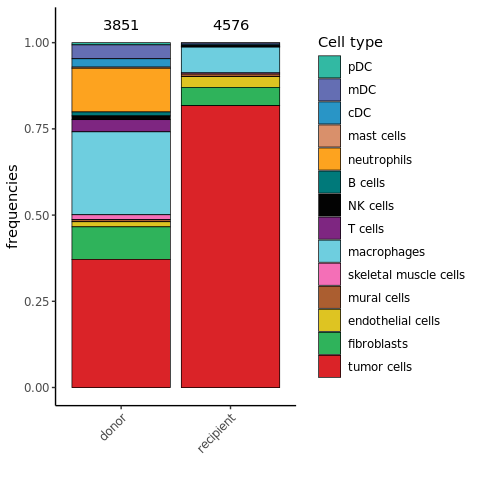
Cell cycle phase
We annotate cells for cell cycle phase using Seurat and
cyclone.
cc_columns = aquarius::add_cell_cycle(sobj = sobj,
assay = "RNA",
species_rdx = "mm",
BPPARAM = cl)@meta.data[, c("Seurat.Phase", "Phase")]##
## G1 G2M S
## 7810 541 64sobj$Seurat.Phase = cc_columns$Seurat.Phase
sobj$cyclone.Phase = cc_columns$Phase
table(sobj$Seurat.Phase, sobj$cyclone.Phase)##
## G1 G2M S
## G1 5158 75 25
## G2M 868 423 27
## S 1784 43 12Quality control
In this section, we look at the number of genes expressed by each cell, the number of UMI, the percentage of mitochondrial genes expressed, and the percentage of ribosomal genes expressed. Then, without taking into account the cells expressing low number of genes or have low number of UMI, we identify doublet cells.
We compute four quality metrics :
sobj = aquarius::add_QC_metrics(sobj = sobj,
species_rdx = "mm",
BPPARAM = cl)Visualization
Number of UMI
To visualize the threshold for number of UMI, we can make a histogram :
ggplot(sobj@meta.data, aes(x = log_nCount_RNA)) +
geom_histogram(aes(y = ..density..), colour = "black", fill = "white", bins = 200) +
geom_density(alpha = 0.2, fill = "#FF6666") +
ggplot2::theme_classic()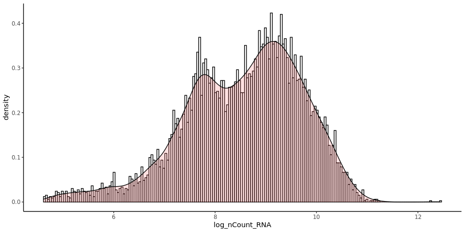
We can also visualize these as a violin plot :
Seurat::VlnPlot(sobj, features = "log_nCount_RNA", pt.size = 0.001,
group.by = "orig.ident", cols = sample_info$color) +
ggplot2::labs(x = "")
Seurat::VlnPlot(sobj, features = "log_nCount_RNA", pt.size = 0.001,
group.by = "cell_type", cols = color_markers) +
ggplot2::scale_fill_manual(values = color_markers, breaks = names(color_markers)) +
ggplot2::labs(x = "")
Number of features
To visualize the threshold for number of features, we can make a histogram :
ggplot(sobj@meta.data, aes(x = nFeature_RNA)) +
geom_histogram(aes(y = ..density..), colour = "black", fill = "white", bins = 200) +
geom_density(alpha = 0.2, fill = "#FF6666") +
ggplot2::theme_classic()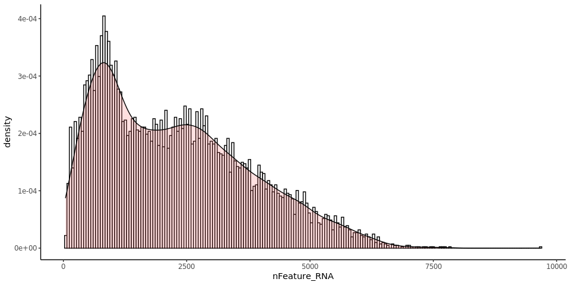
We can also visualize these as a violin plot :
Seurat::VlnPlot(sobj, features = "nFeature_RNA", pt.size = 0.001,
group.by = "orig.ident", cols = sample_info$color) +
ggplot2::labs(x = "")
Seurat::VlnPlot(sobj, features = "nFeature_RNA", pt.size = 0.001,
group.by = "cell_type", cols = color_markers) +
ggplot2::scale_fill_manual(values = color_markers, breaks = names(color_markers)) +
ggplot2::labs(x = "")
Mitochondrial genes expression
To identify a threshold for mitochondrial gene expression, we can make a histogram :
ggplot(sobj@meta.data, aes(x = percent.mt)) +
geom_histogram(aes(y = ..density..), colour = "black", fill = "white", bins = 200) +
geom_density(alpha = 0.2, fill = "#FF6666") +
ggplot2::theme_classic()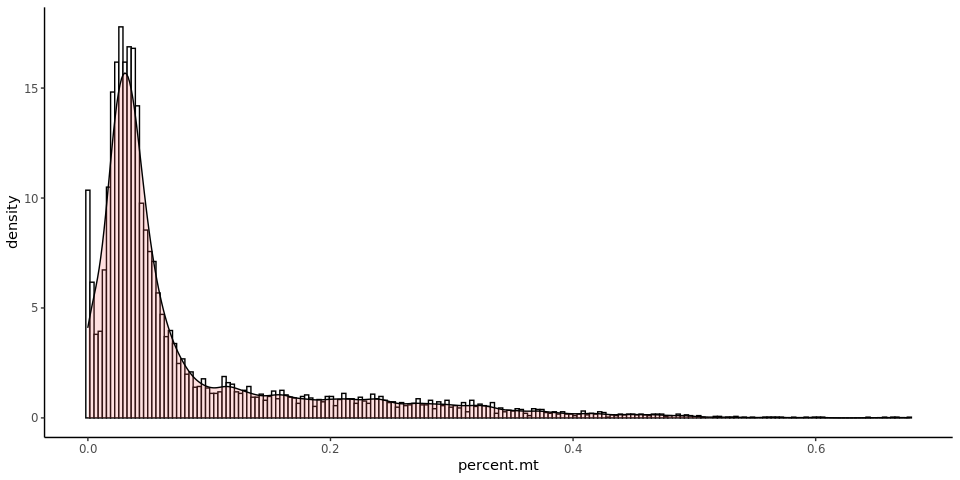
We can also visualize these as a violin plot :
Seurat::VlnPlot(sobj, features = "percent.mt", pt.size = 0.001,
group.by = "orig.ident", cols = sample_info$color) +
ggplot2::labs(x = "")
Seurat::VlnPlot(sobj, features = "percent.mt", pt.size = 0.001,
group.by = "cell_type", cols = color_markers) +
ggplot2::scale_fill_manual(values = color_markers, breaks = names(color_markers)) +
ggplot2::labs(x = "")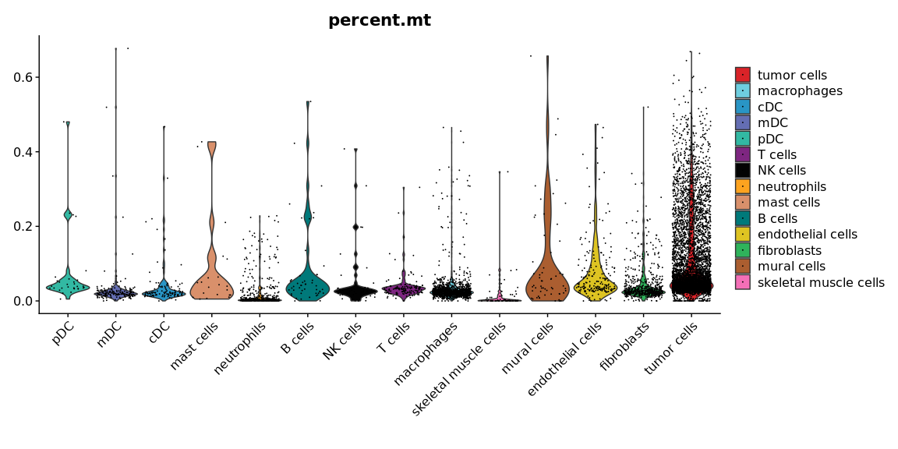
Ribosomal genes expression
To identify a threshold for ribosomal gene expression, we can make a histogram :
ggplot(sobj@meta.data, aes(x = percent.rb)) +
geom_histogram(aes(y = ..density..), colour = "black", fill = "white", bins = 200) +
geom_density(alpha = 0.2, fill = "#FF6666") +
ggplot2::theme_classic() 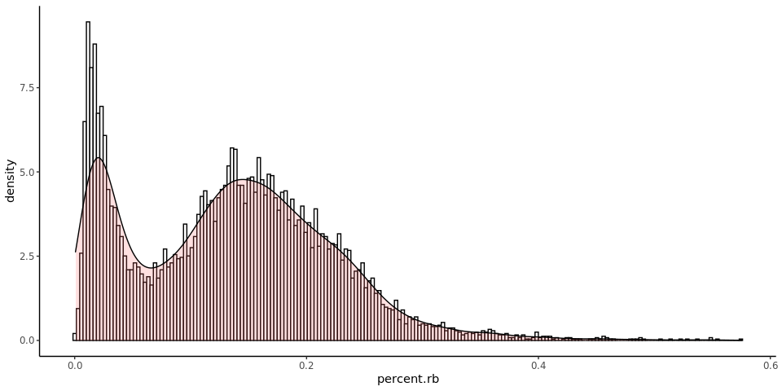
We can also visualize these as a violin plot :
Seurat::VlnPlot(sobj, features = "percent.rb", pt.size = 0.001,
group.by = "orig.ident", cols = sample_info$color) +
ggplot2::labs(x = "")
Seurat::VlnPlot(sobj, features = "percent.rb", pt.size = 0.001,
group.by = "cell_type", cols = color_markers) +
ggplot2::scale_fill_manual(values = color_markers, breaks = names(color_markers)) +
ggplot2::labs(x = "")
QC thresholds
We set threshold for each metric :
sobj$all_cells = TRUE
cut_log_nCount_RNA = 6.34
cut_nFeature_RNA = 626
cut_percent.mt = 0.1
cut_percent.rb = 0.3We get the cell barcodes for the failing cells :
fail_percent.mt = sobj@meta.data %>% dplyr::filter(percent.mt > cut_percent.mt) %>% rownames()
fail_percent.rb = sobj@meta.data %>% dplyr::filter(percent.rb > cut_percent.rb) %>% rownames()
fail_log_nCount_RNA = sobj@meta.data %>% dplyr::filter(log_nCount_RNA < cut_log_nCount_RNA) %>% rownames()
fail_nFeature_RNA = sobj@meta.data %>% dplyr::filter(nFeature_RNA < cut_nFeature_RNA) %>% rownames()We can visualize the 4 cells quality with a Venn diagram :
ggvenn::ggvenn(list(percent.mt = fail_percent.mt,
percent.rb = fail_percent.rb,
log_nCount_RNA = fail_log_nCount_RNA,
nFeature_RNA = fail_nFeature_RNA),
fill_color = c("#0073C2FF", "#EFC000FF", "orange", "pink"),
stroke_size = 0.5, set_name_size = 4) +
ggplot2::ggtitle(label = "Filtered out cells") +
ggplot2::theme(plot.title = element_text(hjust = 0.5, face = "bold"))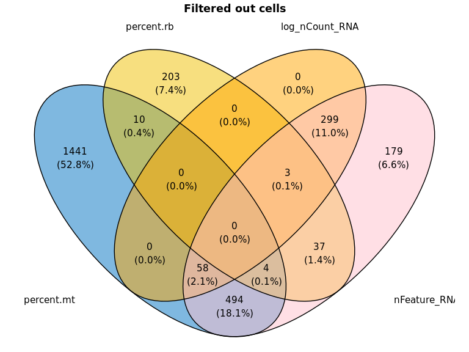
Doublet cells
Detection
Without taking into account the low UMI and low number of features cells, we identify doublets.
fsobj = subset(sobj, invert = TRUE,
cells = unique(c(fail_log_nCount_RNA, fail_nFeature_RNA)))
fsobj## An object of class Seurat
## 28000 features across 7353 samples within 1 assay
## Active assay: RNA (28000 features, 3000 variable features)On this filtered dataset, we apply doublet cells detection. Just before, we run the normalization, taking into account only the remaining cells.
fsobj = aquarius::sc_normalization(sobj = fsobj,
assay = "RNA",
method = "LogNormalize",
verbose = FALSE)We identify doublet cells :
fsobj = aquarius::find_doublets(sobj = fsobj,
BPPARAM = cl)## [1] 28000 7353
##
## FALSE TRUE
## 6837 516
## [16:20:36] WARNING: amalgamation/../src/learner.cc:1095: Starting in XGBoost 1.3.0, the default evaluation metric used with the objective 'binary:logistic' was changed from 'error' to 'logloss'. Explicitly set eval_metric if you'd like to restore the old behavior.
##
## FALSE TRUE
## 6779 574
##
## FALSE TRUE
## 6482 871fail_doublets_consensus = Seurat::WhichCells(fsobj, expression = doublets_consensus.class)
fail_doublets_scDblFinder = Seurat::WhichCells(fsobj, expression = scDblFinder.class)
fail_doublets_hybrid = Seurat::WhichCells(fsobj, expression = hybrid_score.class)(Time to run : 139.58 s)
We add the information in the non filtered Seurat object :
sobj$doublets_consensus.class = dplyr::case_when(!(colnames(sobj) %in% colnames(fsobj)) ~ NA,
colnames(sobj) %in% fail_doublets_consensus ~ TRUE,
!(colnames(sobj) %in% fail_doublets_consensus) ~ FALSE)
sobj$scDblFinder.class = dplyr::case_when(!(colnames(sobj) %in% colnames(fsobj)) ~ NA,
colnames(sobj) %in% fail_doublets_scDblFinder ~ TRUE,
!(colnames(sobj) %in% fail_doublets_scDblFinder) ~ FALSE)
sobj$hybrid_score.class = dplyr::case_when(!(colnames(sobj) %in% colnames(fsobj)) ~ NA,
colnames(sobj) %in% fail_doublets_hybrid ~ TRUE,
!(colnames(sobj) %in% fail_doublets_hybrid) ~ FALSE)Visualization
We can compare doublet detection methods with a Venn diagram :
ggvenn::ggvenn(list(hybrid = fail_doublets_hybrid,
scDblFinder = fail_doublets_scDblFinder),
fill_color = c("#0073C2FF", "#EFC000FF"),
stroke_size = 0.5, set_name_size = 4) +
ggplot2::ggtitle(label = "Doublet cells") +
ggplot2::theme(plot.title = element_text(hjust = 0.5, face = "bold"))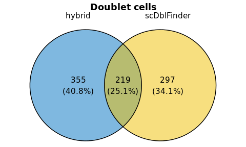
How many doublet are detected for each sample of origin ?
round(100*prop.table(table(sobj$doublets_consensus.class, sobj$orig.ident), margin = 2), 2)##
## donor recipient
## FALSE 89.21 87.30
## TRUE 10.79 12.70What is the composition of doublet cells ?
sobj$orig.ident.doublets = case_when(is.na(sobj$doublets_consensus.class) ~ "bad quality",
sobj$doublets_consensus.class == TRUE ~ paste0(sobj$orig.ident, " doublets"),
sobj$doublets_consensus.class == FALSE ~ "not doublet")
sobj$orig.ident.doublets = factor(sobj$orig.ident.doublets,
levels = c(paste0(as.character(sample_info$sample_identifiant), " doublets"),
"bad quality", "not doublet"))
doublets_compo = function(score1, score2) {
type1 = unlist(lapply(stringr::str_split(score1, pattern = "score_"), `[[`, 2))
type2 = unlist(lapply(stringr::str_split(score2, pattern = "score_"), `[[`, 2))
if (type1 == type2) {
the_title = "Homotypic doublet"
the_subtitle = type1
score1 = "log_nCount_RNA"
} else {
the_title = "Heterotypic doublet"
the_subtitle = paste(type1, type2, sep = " + ")
}
p = sobj@meta.data %>%
dplyr::arrange(desc(orig.ident.doublets)) %>%
ggplot2::ggplot(., aes(x = eval(parse(text = score1)),
y = eval(parse(text = score2)),
col = orig.ident.doublets)) +
ggplot2::geom_point(size = 0.25) +
ggplot2::scale_color_manual(values = c(sample_info$color, "gray90", "gray60"),
breaks = c(paste0(as.character(sample_info$sample_identifiant), " doublets"),
"bad quality", "not doublet")) +
ggplot2::labs(x = score1, y = score2,
title = the_title, subtitle = the_subtitle) +
ggplot2::theme_classic() +
ggplot2::theme(aspect.ratio = 1,
plot.title = element_text(hjust = 0.5),
plot.subtitle = element_text(hjust = 0.5))
return(p)
}On the plots below, we visualize all cells. Cells with low count and low number of features are in light gray. Single cells are in dark gray. Droplets annotated as doublet cells are colored by sample of origin. To investigate homotypic doublet cells, we represent the cell type score as a function of the number of UMI If there is a homotypic doublet, there will be a cloud of cells with a high score for the cell type, a high number of UMI. To investigate heterotypic doublet cells, we represent the two cell type scores. If doublet cells between the two cell types exists, we will observe single cell with one high score and one low score (top left corner or bottom right corner), and a cloud of cells with two high scores (top right corner). A cloud of cells with two low scores (bottom left corner) means that cells are not from the two cell types. If there is not top left or bottom right corner, but only top right and / or bottom left, it means that the two cell types are correlated, and cannot be interpreted as doublet cells.
score_columns = grep(x = colnames(sobj@meta.data),
pattern = "^score",
value = TRUE)
combinations = expand.grid(score_columns, score_columns) %>%
apply(., 1, sort) %>% t() %>%
as.data.frame()
combinations = combinations[!duplicated(combinations), ]
plot_list = apply(combinations, 1, FUN = function(elem) {
doublets_compo(elem[1], elem[2])
})
sobj$orig.ident.doublets = NULLpatchwork::wrap_plots(plot_list, ncol = 4) +
patchwork::plot_layout(guides = "collect") &
ggplot2::theme(legend.position = "right")show
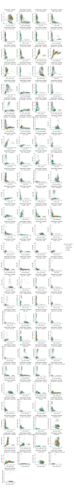
FACS-like figure
We would like to see if the number of feature expressed by cell, and
the number of UMI is correlated with the cell type, the percentage of
mitonchondrial and ribosomal gene detected, and the doublet status. We
build the log_nCount_RNA by nFeature_RNA
figure, where cells (dots) are colored by these different metrics.
We prepare the figure :
pass_log_nCount_RNA = sobj@meta.data$log_nCount_RNA > cut_log_nCount_RNA
pass_nFeature_RNA = sobj@meta.data$nFeature_RNA > cut_nFeature_RNA
minus_minus = intersect(which(!(pass_log_nCount_RNA)), which(!pass_nFeature_RNA)) %>% length()
minus_plus = intersect(which(pass_log_nCount_RNA), which(!pass_nFeature_RNA)) %>% length()
plus_minus = intersect(which(!pass_log_nCount_RNA), which(pass_nFeature_RNA)) %>% length()
plus_plus = intersect(which(pass_log_nCount_RNA), which(pass_nFeature_RNA)) %>% length()
grobTable = data.frame(x = c(minus_plus, 100*round(minus_plus/ncol(sobj),4),
minus_minus, 100*round(minus_minus/ncol(sobj),4)),
y = c(plus_plus, 100*round(plus_plus/ncol(sobj),4),
plus_minus, 100*round(plus_minus/ncol(sobj),4)))
grobTable$x = as.character(grobTable$x)
grobTable$y = as.character(grobTable$y)
grobTable[c(2,4), ] = lapply(grobTable[c(2,4), ], FUN = function(x) paste(x, "%")) %>%
as.data.frame(., stringsAsFactors = FALSE)
grobTable = gridExtra::tableGrob(grobTable,
theme = gridExtra::ttheme_minimal(
core = list(fg_params = list(cex = 0.80))),
rows = NULL, cols = NULL) %>%
gtable::gtable_add_grob(., grobs = grid::segmentsGrob(x0 = unit(0,"npc"),
y0 = unit(0,"npc"),
x1 = unit(1,"npc"),
y1 = unit(0,"npc"),
gp = grid::gpar(lwd = 2.0)),
t = 2, b = 2, l = 1, r = 2) %>%
gtable::gtable_add_grob(., grobs = grid::segmentsGrob(x0 = unit(0,"npc"),
y0 = unit(0,"npc"),
x1 = unit(0,"npc"),
y1 = unit(1,"npc"),
gp = grid::gpar(lwd = 2.0)),
t = 1, b = 4, l = 2, r = 2)We will make three figures representing both main quality metrics, with different colors :
# With orig.ident
p_scat_ident = ggplot(sobj@meta.data,
aes(x = nFeature_RNA, y = log_nCount_RNA, col = orig.ident)) +
ggplot2::scale_color_manual(breaks = sample_info$sample_identifiant,
values = sample_info$color)
# With percent.mt
p_scat_mito = ggplot(sobj@meta.data,
aes(x = nFeature_RNA, y = log_nCount_RNA, col = percent.mt)) +
ggplot2::scale_color_gradientn(breaks = c(0, 0.05, 0.10, 0.20, 0.30, 1),
colours = c("green4", "yellow", "orange", "red", "black", "black"))
# With percent.rb
p_scat_ribo = ggplot(sobj@meta.data,
aes(x = nFeature_RNA, y = log_nCount_RNA, col = percent.rb)) +
ggplot2::scale_color_gradientn(breaks = c(0, 0.05, 0.10, 0.20, 0.30, 1),
colours = c("green4", "yellow", "orange", "red", "black", "black"))
# With doublet consensus
p_scat_doublet_both = ggplot(sobj@meta.data,
aes(x = nFeature_RNA, y = log_nCount_RNA, col = doublets_consensus.class)) +
ggplot2::scale_color_manual(breaks = c(TRUE, FALSE, NA),
values = c(aquarius::gg_color_hue(2), "lightgray"))
# With doublet from scDblFinder
p_scat_scdblfinder = ggplot(sobj@meta.data,
aes(x = nFeature_RNA, y = log_nCount_RNA, col = scDblFinder.class)) +
ggplot2::scale_color_manual(breaks = c(TRUE, FALSE, NA),
values = c(aquarius::gg_color_hue(2), "lightgray"))
# With doublet from hybrid
p_scat_hybrid = ggplot(sobj@meta.data,
aes(x = nFeature_RNA, y = log_nCount_RNA, col = hybrid_score.class)) +
ggplot2::scale_color_manual(breaks = c(TRUE, FALSE, NA),
values = c(aquarius::gg_color_hue(2), "lightgray"))
# With cell type
p_scat_cell_type = ggplot(sobj@meta.data,
aes(x = nFeature_RNA, y = log_nCount_RNA, col = cell_type)) +
ggplot2::scale_color_manual(values = color_markers,
breaks = names(color_markers))
# Complete p_scat
complete_p_scat = function(p_scat) {
p_scat = p_scat +
ggplot2::geom_point(size = 0.25) +
ggplot2::geom_hline(yintercept = cut_log_nCount_RNA, col = "red") +
ggplot2::geom_vline(xintercept = cut_nFeature_RNA, col = "red")
x_text = ggplot_build(p_scat)$layout$panel_params[[1]]$x$get_labels() %>% as.numeric()
y_text = ggplot_build(p_scat)$layout$panel_params[[1]]$y$get_labels() %>% as.numeric()
p_scat = p_scat +
ggplot2::scale_x_continuous(breaks = round(sort(c(x_text, cut_nFeature_RNA)),2),
limits = range(sobj@meta.data$nFeature_RNA)) +
ggplot2::scale_y_continuous(breaks = round(sort(c(y_text, cut_log_nCount_RNA)),2),
limits = range(sobj@meta.data$log_nCount_RNA))
x_color = ifelse(ggplot_build(p_scat)$layout$panel_params[[1]]$x$get_labels() %>%
as.numeric() %>% round(., 2) == round(cut_nFeature_RNA, 2),
"red", "black")
y_color = ifelse(ggplot_build(p_scat)$layout$panel_params[[1]]$y$get_labels() %>%
as.numeric() %>% round(., 2) == round(cut_log_nCount_RNA, 2),
"red", "black")
p_scat = p_scat +
ggplot2::theme_classic() +
ggplot2::theme(axis.text.x = element_text(color = x_color),
axis.text.y = element_text(color = y_color))
return(p_scat)
}We build the two marginal distribution plots :
p_hist_1 = ggplot(sobj@meta.data, aes(x = nFeature_RNA)) +
geom_histogram(aes(y = ..density..), colour = "black", fill = "white", bins = 40) +
geom_density(alpha = 0.2, fill = "#FF6666") +
ggplot2::geom_vline(xintercept = cut_nFeature_RNA, col = "red") +
ggplot2::lims(x = range(sobj@meta.data$nFeature_RNA)) +
ggplot2::theme_classic() +
ggplot2::theme(axis.title = element_blank(),
axis.ticks = element_blank(),
axis.text = element_blank())
p_hist_2 = ggplot(sobj@meta.data, aes(x = log_nCount_RNA)) +
geom_histogram(aes(y = ..density..), colour = "black", fill = "white", bins = 40) +
geom_density(alpha = 0.2, fill = "#FF6666") +
ggplot2::geom_vline(xintercept = cut_log_nCount_RNA, col = "red") +
ggplot2::lims(x = range(sobj@meta.data$log_nCount_RNA)) +
ggplot2::coord_flip() +
ggplot2::theme_classic() +
ggplot2::theme(axis.title = element_blank(),
axis.ticks = element_blank(),
axis.text = element_blank())This is the figure, colored by sample of origin :
patchwork::wrap_plots(complete_p_scat(p_scat_ident), p_hist_1, p_hist_2, grobTable) +
patchwork::plot_layout(design = "
BBBBBD\nAAAAAC\nAAAAAC\nAAAAAC",
guides = "collect",
widths = c(5,3),
heights = c(3,5)) +
ggplot2::theme(panel.spacing = unit(15, "pt"),
legend.position = "right") &
ggplot2::guides(color = guide_legend(ncol = 1, override.aes = list(size = 3)))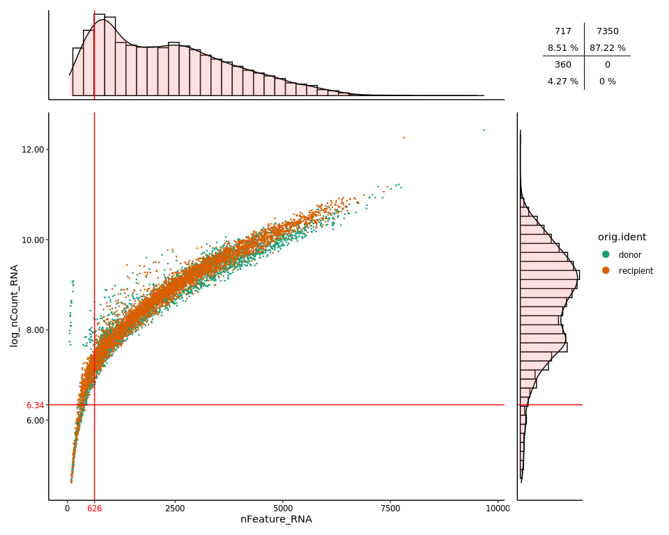
This is the figure, colored by cell type :
patchwork::wrap_plots(complete_p_scat(p_scat_cell_type), p_hist_1, p_hist_2, grobTable) +
patchwork::plot_layout(design = "
BBBBBD\nAAAAAC\nAAAAAC\nAAAAAC",
guides = "collect",
widths = c(5,3),
heights = c(3,5)) +
ggplot2::theme(panel.spacing = unit(15, "pt"),
legend.position = "right") &
ggplot2::guides(color = guide_legend(ncol = 1, override.aes = list(size = 3)))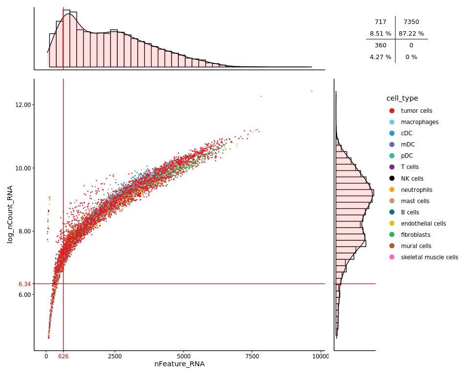
This is the figure, colored by the percentage of mitochondrial genes expressed in cell :
patchwork::wrap_plots(complete_p_scat(p_scat_mito), p_hist_1, p_hist_2, grobTable) +
patchwork::plot_layout(design = "
BBBBBD\nAAAAAC\nAAAAAC\nAAAAAC",
guides = "collect",
widths = c(5,3),
heights = c(3,5)) +
ggplot2::theme(panel.spacing = unit(15, "pt"),
legend.position = "right") &
ggplot2::guides(color = guide_legend(ncol = 1, override.aes = list(size = 3)))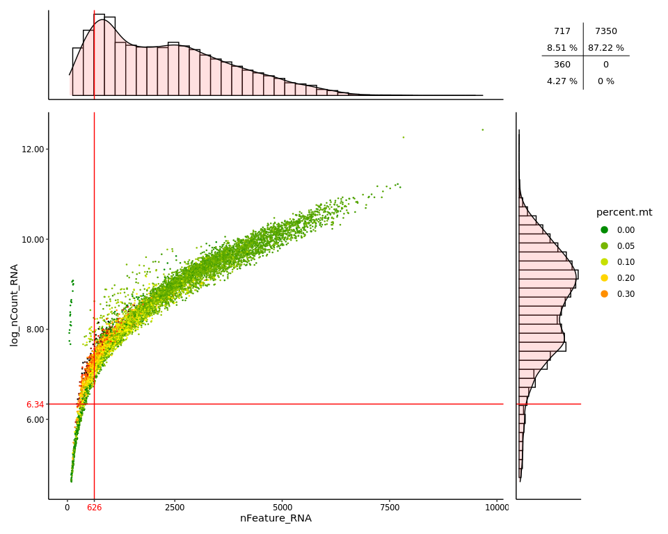
This is the figure, colored by the percentage of ribosomal genes expressed in cell :
patchwork::wrap_plots(complete_p_scat(p_scat_ribo), p_hist_1, p_hist_2, grobTable) +
patchwork::plot_layout(design = "
BBBBBD\nAAAAAC\nAAAAAC\nAAAAAC",
guides = "collect",
widths = c(5,3),
heights = c(3,5)) +
ggplot2::theme(panel.spacing = unit(15, "pt"),
legend.position = "right") &
ggplot2::guides(color = guide_legend(ncol = 1, override.aes = list(size = 3)))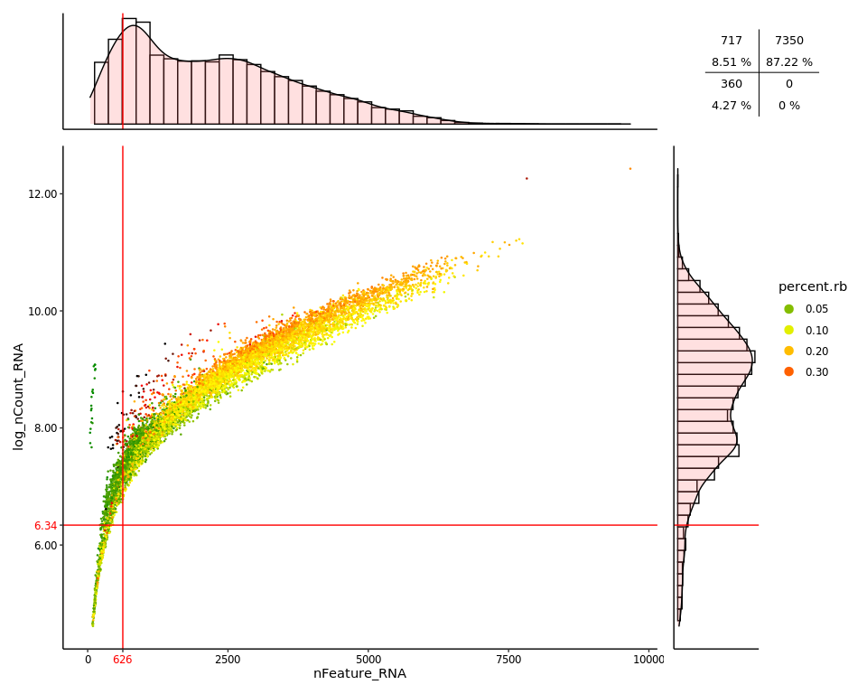
This is the figure, colored by the doublet cells status
(doublets_consensus.class) :
patchwork::wrap_plots(complete_p_scat(p_scat_doublet_both), p_hist_1, p_hist_2, grobTable) +
patchwork::plot_layout(design = "
BBBBBD\nAAAAAC\nAAAAAC\nAAAAAC",
guides = "collect",
widths = c(5,3),
heights = c(3,5)) +
ggplot2::theme(panel.spacing = unit(15, "pt"),
legend.position = "right") &
ggplot2::guides(color = guide_legend(ncol = 1, override.aes = list(size = 3)))
This is the figure, colored by the doublet cells status
(scDblFinder.class) :
patchwork::wrap_plots(complete_p_scat(p_scat_scdblfinder), p_hist_1, p_hist_2, grobTable) +
patchwork::plot_layout(design = "
BBBBBD\nAAAAAC\nAAAAAC\nAAAAAC",
guides = "collect",
widths = c(5,3),
heights = c(3,5)) +
ggplot2::theme(panel.spacing = unit(15, "pt"),
legend.position = "right") &
ggplot2::guides(color = guide_legend(ncol = 1, override.aes = list(size = 3)))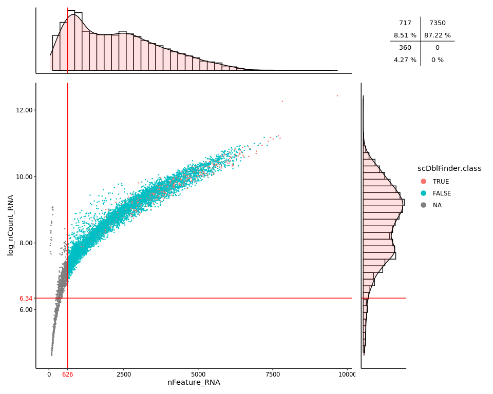
This is the figure, colored by the doublet cells status
(hybrid_score.class) :
patchwork::wrap_plots(complete_p_scat(p_scat_hybrid), p_hist_1, p_hist_2, grobTable) +
patchwork::plot_layout(design = "
BBBBBD\nAAAAAC\nAAAAAC\nAAAAAC",
guides = "collect",
widths = c(5,3),
heights = c(3,5)) +
ggplot2::theme(panel.spacing = unit(15, "pt"),
legend.position = "right") &
ggplot2::guides(color = guide_legend(ncol = 1, override.aes = list(size = 3)))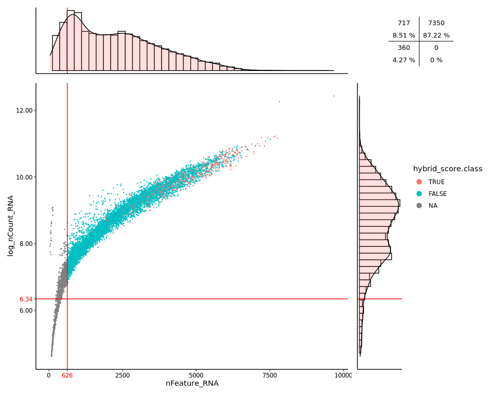
Piecharts
Do filtered cells belong to a particular cell type ?
piechart_all_cells = aquarius::plot_piechart(df = sobj@meta.data,
logical_var = "all_cells",
grouping_var = "cell_type",
colors = color_markers,
display_legend = TRUE) +
ggplot2::labs(title = "All cells",
subtitle = paste(nrow(sobj@meta.data), "cells")) +
ggplot2::theme(plot.title = element_text(hjust = 0.5, face = "bold"),
plot.subtitle = element_text(hjust = 0.5))
piechart_doublets = aquarius::plot_piechart(df = sobj@meta.data %>%
dplyr::filter(doublets_consensus.class),
logical_var = "all_cells",
grouping_var = "cell_type",
colors = color_markers,
display_legend = TRUE) +
ggplot2::labs(title = "doublets_consensus.class",
subtitle = paste(sum(sobj$doublets_consensus.class, na.rm = TRUE), "cells")) +
ggplot2::theme(plot.title = element_text(hjust = 0.5, face = "bold"),
plot.subtitle = element_text(hjust = 0.5))
piechart_percent.mt = aquarius::plot_piechart(df = sobj@meta.data %>%
dplyr::filter(percent.mt > cut_percent.mt),
logical_var = "all_cells",
grouping_var = "cell_type",
colors = color_markers,
display_legend = TRUE) +
ggplot2::labs(title = paste("percent.mt >", cut_percent.mt),
subtitle = paste(length(fail_percent.mt), "cells")) +
ggplot2::theme(plot.title = element_text(hjust = 0.5, face = "bold"),
plot.subtitle = element_text(hjust = 0.5))
piechart_percent.rb = aquarius::plot_piechart(df = sobj@meta.data %>%
dplyr::filter(percent.rb > cut_percent.rb),
logical_var = "all_cells",
grouping_var = "cell_type",
colors = color_markers,
display_legend = TRUE) +
ggplot2::labs(title = paste("percent.rb >", cut_percent.rb),
subtitle = paste(length(fail_percent.rb), "cells")) +
ggplot2::theme(plot.title = element_text(hjust = 0.5, face = "bold"),
plot.subtitle = element_text(hjust = 0.5))
piechart_log_nCount_RNA = aquarius::plot_piechart(df = sobj@meta.data %>%
dplyr::filter(log_nCount_RNA < cut_log_nCount_RNA),
logical_var = "all_cells",
grouping_var = "cell_type",
colors = color_markers,
display_legend = TRUE) +
ggplot2::labs(title = paste("log_nCount_RNA <", round(cut_log_nCount_RNA, 2)),
subtitle = paste(length(fail_log_nCount_RNA), "cells")) +
ggplot2::theme(plot.title = element_text(hjust = 0.5, face = "bold"),
plot.subtitle = element_text(hjust = 0.5))
piechart_nFeature_RNA = aquarius::plot_piechart(df = sobj@meta.data %>%
dplyr::filter(nFeature_RNA < cut_nFeature_RNA),
logical_var = "all_cells",
grouping_var = "cell_type",
colors = color_markers,
display_legend = TRUE) +
ggplot2::labs(title = paste("nFeature_RNA <", round(cut_nFeature_RNA, 2)),
subtitle = paste(length(fail_nFeature_RNA), "cells")) +
ggplot2::theme(plot.title = element_text(hjust = 0.5, face = "bold"),
plot.subtitle = element_text(hjust = 0.5))
patchwork::wrap_plots(piechart_all_cells, piechart_percent.mt, piechart_percent.rb,
piechart_doublets, piechart_nFeature_RNA, piechart_log_nCount_RNA) +
patchwork::plot_layout(guides = "collect") &
ggplot2::theme(legend.position = "right")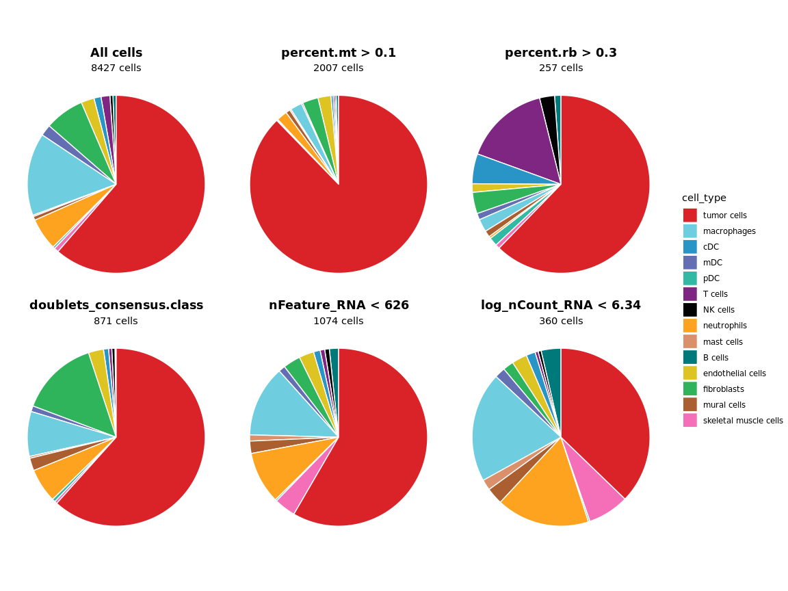
Do filtered cells belong to a particular sample ?
piechart_all_cells = aquarius::plot_piechart(df = sobj@meta.data,
logical_var = "all_cells",
grouping_var = "orig.ident",
colors = sample_info$color,
display_legend = TRUE) +
ggplot2::scale_fill_manual(values = sample_info$color,
breaks = sample_info$sample_identifiant,
name = "Sample of origin") +
ggplot2::labs(title = "All cells",
subtitle = paste(nrow(sobj@meta.data), "cells")) +
ggplot2::theme(plot.title = element_text(hjust = 0.5, face = "bold"),
plot.subtitle = element_text(hjust = 0.5))
piechart_percent.mt = aquarius::plot_piechart(df = sobj@meta.data %>%
dplyr::filter(percent.mt > cut_percent.mt),
logical_var = "all_cells",
grouping_var = "orig.ident",
colors = sample_info$color,
display_legend = TRUE) +
ggplot2::scale_fill_manual(values = sample_info$color,
breaks = sample_info$sample_identifiant,
name = "Sample of origin") +
ggplot2::labs(title = paste("percent.mt >", cut_percent.mt),
subtitle = paste(length(fail_percent.mt), "cells")) +
ggplot2::theme(plot.title = element_text(hjust = 0.5, face = "bold"),
plot.subtitle = element_text(hjust = 0.5))
piechart_percent.rb = aquarius::plot_piechart(df = sobj@meta.data %>%
dplyr::filter(percent.rb > cut_percent.rb),
logical_var = "all_cells",
grouping_var = "orig.ident",
colors = sample_info$color,
display_legend = TRUE) +
ggplot2::scale_fill_manual(values = sample_info$color,
breaks = sample_info$sample_identifiant,
name = "Sample of origin") +
ggplot2::labs(title = paste("percent.rb >", cut_percent.rb),
subtitle = paste(length(fail_percent.rb), "cells")) +
ggplot2::theme(plot.title = element_text(hjust = 0.5, face = "bold"),
plot.subtitle = element_text(hjust = 0.5))
piechart_log_nCount_RNA = aquarius::plot_piechart(df = sobj@meta.data %>%
dplyr::filter(log_nCount_RNA < cut_log_nCount_RNA),
logical_var = "all_cells",
grouping_var = "orig.ident",
colors = sample_info$color,
display_legend = TRUE) +
ggplot2::scale_fill_manual(values = sample_info$color,
breaks = sample_info$sample_identifiant,
name = "Sample of origin") +
ggplot2::labs(title = paste("log_nCount_RNA <", round(cut_log_nCount_RNA, 2)),
subtitle = paste(length(fail_log_nCount_RNA), "cells")) +
ggplot2::theme(plot.title = element_text(hjust = 0.5, face = "bold"),
plot.subtitle = element_text(hjust = 0.5))
piechart_nFeature_RNA = aquarius::plot_piechart(df = sobj@meta.data %>%
dplyr::filter(nFeature_RNA < cut_nFeature_RNA),
logical_var = "all_cells",
grouping_var = "orig.ident",
colors = sample_info$color,
display_legend = TRUE) +
ggplot2::scale_fill_manual(values = sample_info$color,
breaks = sample_info$sample_identifiant,
name = "Sample of origin") +
ggplot2::labs(title = paste("nFeature_RNA <", round(cut_nFeature_RNA, 2)),
subtitle = paste(length(fail_nFeature_RNA), "cells")) +
ggplot2::theme(plot.title = element_text(hjust = 0.5, face = "bold"),
plot.subtitle = element_text(hjust = 0.5))
piechart_doublets = aquarius::plot_piechart(df = sobj@meta.data %>%
dplyr::filter(doublets_consensus.class),
logical_var = "all_cells",
grouping_var = "orig.ident",
colors = sample_info$color,
display_legend = TRUE) +
ggplot2::scale_fill_manual(values = sample_info$color,
breaks = sample_info$sample_identifiant,
name = "Sample of origin") +
ggplot2::labs(title = "doublets_consensus.class",
subtitle = paste(sum(sobj$doublets_consensus.class, na.rm = TRUE), "cells")) +
ggplot2::theme(plot.title = element_text(hjust = 0.5, face = "bold"),
plot.subtitle = element_text(hjust = 0.5))
patchwork::wrap_plots(piechart_all_cells, piechart_percent.mt, piechart_percent.rb,
piechart_doublets, piechart_nFeature_RNA, piechart_log_nCount_RNA) +
patchwork::plot_layout(guides = "collect") &
ggplot2::theme(legend.position = "right")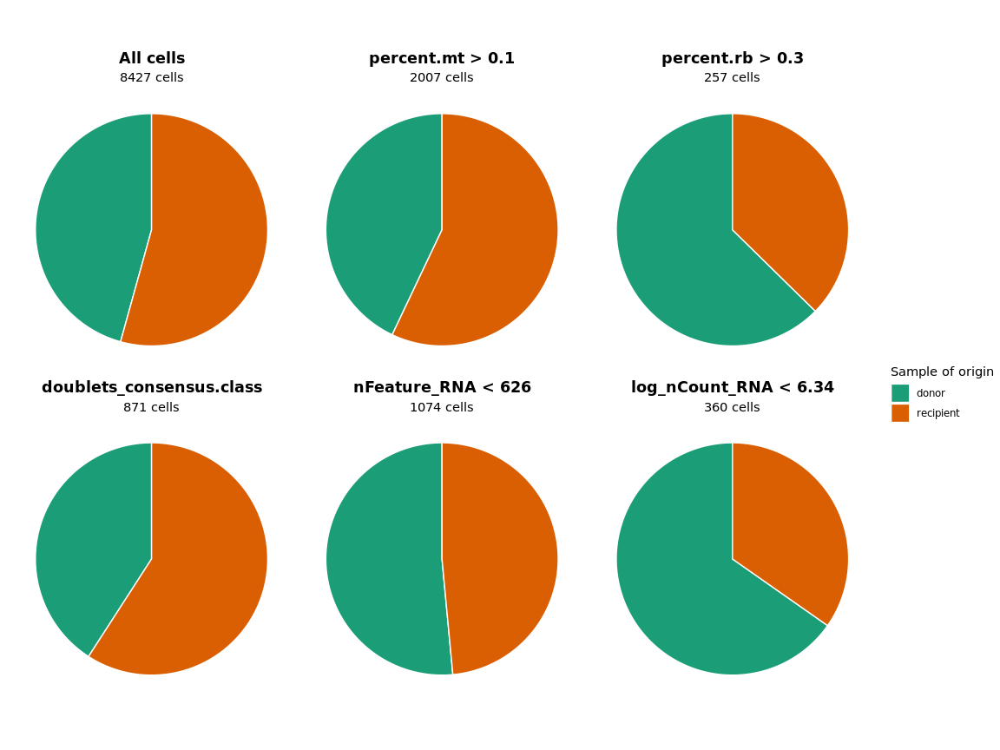
Cells expressing a high level of mitochondrial genes are mainly tumor cells. We do not apply any filter based on this metric, to quantify cell type.
But, for trajectory inference, we will remove them.
Filtering
We remove :
- cells with a number of UMI lower than 6.34
- cells expressing a number of genes lower than 626
- doublet cells detected with both method (scDblFinder and scds-hybrid)
sobj = subset(sobj, invert = TRUE,
cells = unique(c(fail_log_nCount_RNA, fail_nFeature_RNA, fail_doublets_consensus)))
sobj## An object of class Seurat
## 28000 features across 6482 samples within 1 assay
## Active assay: RNA (28000 features, 3000 variable features)We filter genes expressed in few cells :
sobj = aquarius::filter_features(sobj, min_cells = 5)
sobjWe save this object and the metrics :
saveRDS(sobj, paste0(out_dir, "/", save_name, "_sobj_filtered",
"_logCount_", round(cut_log_nCount_RNA, 2),
"_nFeature_", round(cut_nFeature_RNA, 2),
"_doublets_both.rds"))
save(fail_doublets_consensus, fail_doublets_scDblFinder, fail_doublets_hybrid,
fail_percent.mt, fail_log_nCount_RNA, fail_nFeature_RNA,
cut_percent.mt, cut_log_nCount_RNA, cut_nFeature_RNA,
file = paste0(out_dir, "/", save_name, "_filtered_cells.rda"))Post-filtering processing
We normalize the count matrix for remaining cells :
sobj = aquarius::sc_normalization(sobj = sobj,
assay = "RNA",
method = "LogNormalize",
verbose = FALSE)We perform a PCA :
sobj = aquarius::dimensions_reduction(sobj = sobj,
assay = "RNA",
reduction = "pca",
max_dims = 100,
verbose = FALSE)
Seurat::ElbowPlot(sobj, ndims = 100, reduction = "RNA_pca")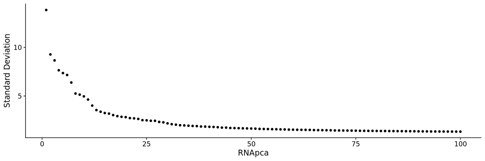
We generate a tSNE and a UMAP with 35 principal components :
ndims = 35
sobj = Seurat::RunTSNE(sobj,
reduction = "RNA_pca",
dims = 1:ndims,
seed.use = 1337L,
reduction.name = paste0("RNA_pca_", ndims, "_tsne"))
sobj = Seurat::RunUMAP(sobj,
reduction = "RNA_pca",
dims = 1:ndims,
seed.use = 1337L,
reduction.name = paste0("RNA_pca_", ndims, "_umap"))We can visualize the two representations. There is a batch effect :
tsne = Seurat::DimPlot(sobj, group.by = "orig.ident",
reduction = paste0("RNA_pca_", ndims, "_tsne"), cols = sample_info$color) +
Seurat::NoAxes() + ggplot2::ggtitle("tSNE") +
ggplot2::theme(aspect.ratio = 1,
plot.title = element_text(hjust = 0.5),
legend.position = "none")
umap = Seurat::DimPlot(sobj, group.by = "orig.ident",
reduction = paste0("RNA_pca_", ndims, "_umap"), cols = sample_info$color) +
Seurat::NoAxes() + ggplot2::ggtitle("UMAP") +
ggplot2::theme(aspect.ratio = 1,
plot.title = element_text(hjust = 0.5))
tsne | umap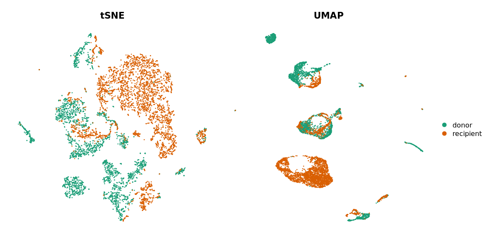
Annotation
We annotate cells for cell type, with the new normalized expression matrix :
score_columns = grep(x = colnames(sobj@meta.data), pattern = "^score", value = TRUE)
sobj@meta.data[, score_columns] = NULL
sobj$cell_type = NULL
sobj = aquarius::cell_annot_custom(sobj,
newname = "cell_type",
markers = cell_markers,
use_negative = TRUE,
add_score = TRUE,
verbose = TRUE)
sobj$cell_type = factor(sobj$cell_type, levels = cell_type_levels)
colnames(sobj@meta.data) = stringr::str_replace_all(string = colnames(sobj@meta.data),
pattern = " ",
replacement = "_")(Time to run : 33.71 s)
To justify cell type annotation, we can make a dotplot :
markers = unique(unlist(dotplot_markers[levels(sobj$cell_type)]))
aquarius::plot_dotplot(sobj, assay = "RNA",
column_name = "cell_type",
markers = c("Ptprc", markers, "dtTomato"),
nb_hline = 0) +
ggplot2::scale_color_gradientn(colors = c("lightgray", "#FDBB84", "#EF6548", "#7F0000", "black")) +
ggplot2::labs(x = "Cell type", y = "") +
ggplot2::theme(legend.position = "right",
legend.box = "vertical",
legend.direction = "vertical") +
ggplot2::geom_vline(xintercept = 0.5 + c(8, 12, 16, 17, 20, 23, 26, 29,
33, 36, 38, 41, 43, 46, 47),
color = "gray92")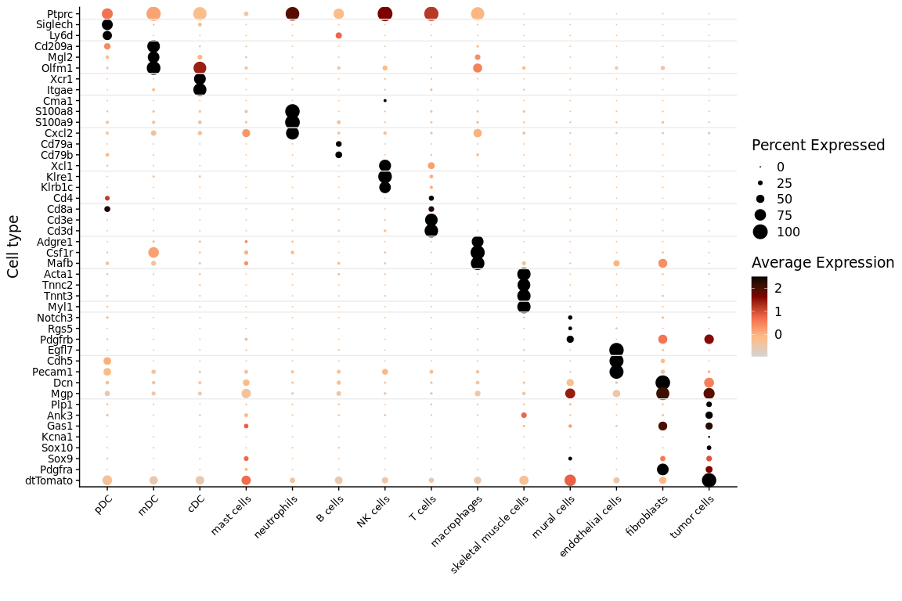
We can make a barplot to see the composition of each dataset.
df_proportion = as.data.frame(prop.table(table(sobj$orig.ident,
sobj$cell_type)))
colnames(df_proportion) = c("orig.ident", "cell_type", "freq")
quantif = table(sobj$orig.ident) %>%
as.data.frame.table() %>%
`colnames<-`(c("orig.ident", "nb_cells"))
aquarius::plot_barplot(df = df_proportion,
x = "orig.ident",
y = "freq",
fill = "cell_type",
position = ggplot2::position_fill()) +
ggplot2::scale_fill_manual(name = "Cell type",
values = color_markers[levels(df_proportion$cell_type)],
breaks = levels(df_proportion$cell_type)) +
ggplot2::geom_label(data = quantif, inherit.aes = FALSE,
aes(x = orig.ident, y = 1.05, label = nb_cells),
label.size = 0)
We annotate cells for cell cycle phase :
cc_columns = aquarius::add_cell_cycle(sobj = sobj,
assay = "RNA",
species_rdx = "mm",
BPPARAM = cl)@meta.data[, c("Seurat.Phase", "Phase")]##
## G1 G2M S
## 6174 290 18sobj$Seurat.Phase = cc_columns$Seurat.Phase
sobj$cyclone.Phase = cc_columns$Phase(Time to run : 176.94 s)
Visualization
We can visualize the cell type :
tsne = Seurat::DimPlot(sobj, group.by = "cell_type",
reduction = paste0("RNA_pca_", ndims, "_tsne"), cols = color_markers) +
Seurat::NoAxes() + ggplot2::ggtitle("tSNE") +
ggplot2::theme(aspect.ratio = 1,
plot.title = element_text(hjust = 0.5),
legend.position = "none")
umap = Seurat::DimPlot(sobj, group.by = "cell_type",
reduction = paste0("RNA_pca_", ndims, "_umap"), cols = color_markers) +
Seurat::NoAxes() + ggplot2::ggtitle("UMAP") +
ggplot2::theme(aspect.ratio = 1,
plot.title = element_text(hjust = 0.5))
tsne | umap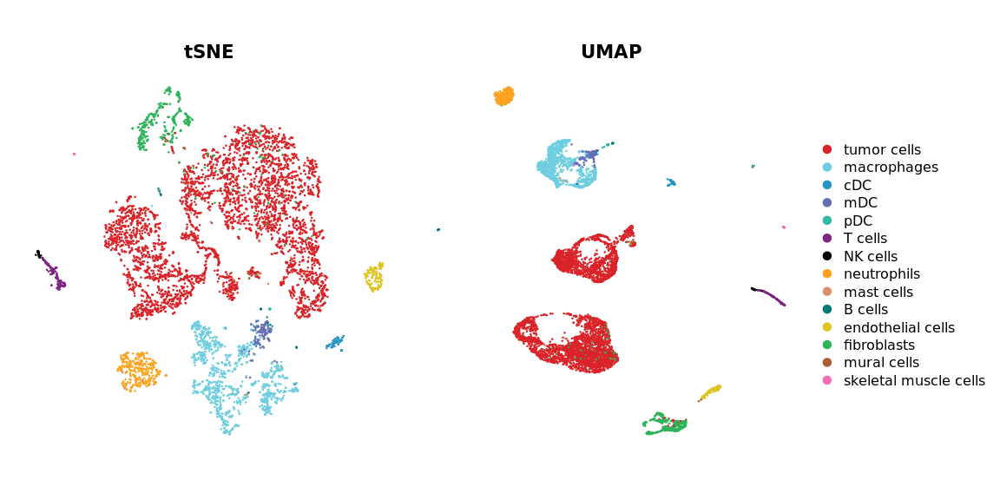
We can visualize the cell cycle, from Seurat :
tsne = Seurat::DimPlot(sobj, group.by = "Seurat.Phase",
reduction = paste0("RNA_pca_", ndims, "_tsne")) +
Seurat::NoAxes() + ggplot2::ggtitle("tSNE") +
ggplot2::theme(aspect.ratio = 1,
plot.title = element_text(hjust = 0.5),
legend.position = "none")
umap = Seurat::DimPlot(sobj, group.by = "Seurat.Phase",
reduction = paste0("RNA_pca_", ndims, "_umap")) +
Seurat::NoAxes() + ggplot2::ggtitle("UMAP") +
ggplot2::theme(aspect.ratio = 1,
plot.title = element_text(hjust = 0.5))
tsne | umap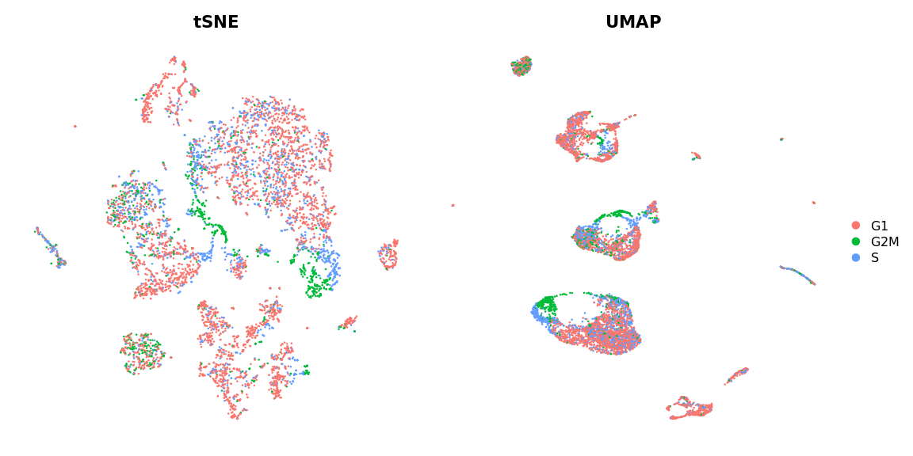
We can visualize the cell cycle, from cyclone :
tsne = Seurat::DimPlot(sobj, group.by = "cyclone.Phase",
reduction = paste0("RNA_pca_", ndims, "_tsne")) +
Seurat::NoAxes() + ggplot2::ggtitle("tSNE") +
ggplot2::theme(aspect.ratio = 1,
plot.title = element_text(hjust = 0.5),
legend.position = "none")
umap = Seurat::DimPlot(sobj, group.by = "cyclone.Phase",
reduction = paste0("RNA_pca_", ndims, "_umap")) +
Seurat::NoAxes() + ggplot2::ggtitle("UMAP") +
ggplot2::theme(aspect.ratio = 1,
plot.title = element_text(hjust = 0.5))
tsne | umap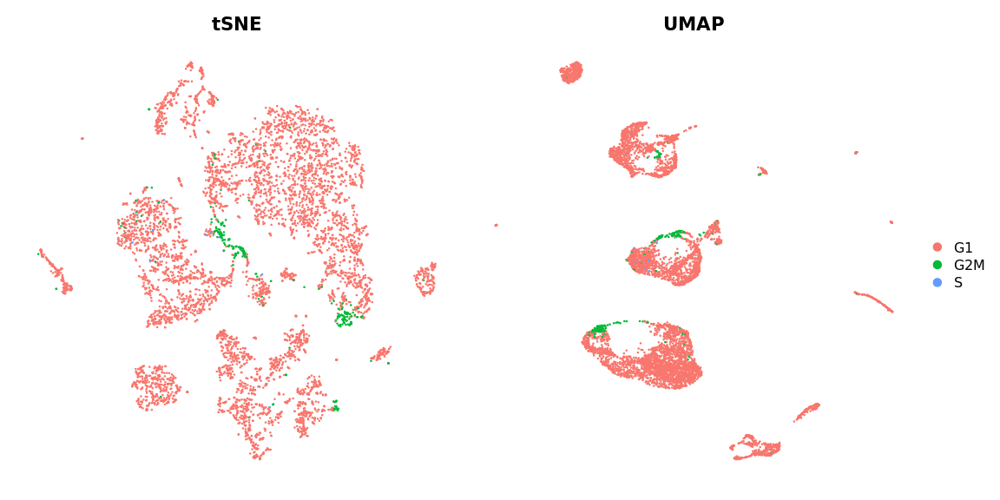
Save
We save the annotated and filtered Seurat object :
saveRDS(sobj, file = paste0(out_dir, "/", save_name, "_sobj_filtered_processed.rds"))Batch effect removal with harmony
On the previous Seurat object, we generate a reduction without batch-effect, from the PCA.
`%||%` = function(lhs, rhs) {
if (!is.null(x = lhs)) {
return(lhs)
} else {
return(rhs)
}
}
set.seed(1337L)
sobj = harmony::RunHarmony(object = sobj,
group.by.vars = "orig.ident",
plot_convergence = TRUE,
reduction = "RNA_pca",
assay.use = "RNA",
reduction.save = "harmony",
max.iter.harmony = 20,
project.dim = FALSE) (Time
to run : 8.16 s)
(Time
to run : 8.16 s)
From this batch-effect removed projection, we generate several tSNE and UMAP.
dims_vector = c(10, 20, 30, 35, 40, 50)
for (ndims in dims_vector) {
sobj = Seurat::RunUMAP(sobj,
dims = 1:ndims,
reduction = "harmony",
reduction.name = paste0("harmony_", ndims, "_umap"),
reduction.key = paste0("harmony", ndims, "umap_"))
sobj = Seurat::RunTSNE(sobj,
dims = 1:ndims,
seed.use = 1337L,
reduction = "harmony",
reduction.name = paste0("harmony_", ndims, "_tsne"),
reduction.key = paste0("harmony", ndims, "tsne_"))
}We can visualize these representations :
# tsne - orig.ident
plot_list = lapply(dims_vector, FUN = function(ndims) {
Seurat::DimPlot(sobj, group.by = "orig.ident",
reduction = paste0("harmony_", ndims, "_tsne")) +
ggplot2::scale_color_manual(values = sample_info$color,
breaks = sample_info$sample_identifiant,
name = "Sample of origin") +
ggplot2::ggtitle(paste0("harmony_", ndims, "_tsne"))})
# tsne - cell_type
plot_list = c(plot_list,
lapply(dims_vector, FUN = function(ndims) {
Seurat::DimPlot(sobj, group.by = "cell_type",
reduction = paste0("harmony_", ndims, "_tsne")) +
ggplot2::scale_color_manual(values = color_markers,
breaks = names(color_markers),
name = "Cell type") +
ggplot2::ggtitle(paste0("harmony_", ndims, "_tsne"))}))
# tsne - Seurat.Phase
plot_list = c(plot_list,
lapply(dims_vector, FUN = function(ndims) {
Seurat::DimPlot(sobj, group.by = "cyclone.Phase",
reduction = paste0("harmony_", ndims, "_tsne")) +
ggplot2::scale_color_manual(values = aquarius::gg_color_hue(3),
breaks = c("G1", "G2M", "S"),
name = "Cell cycle") +
ggplot2::ggtitle(paste0("harmony_", ndims, "_tsne"))}))
# umap - orig.ident
plot_list = c(plot_list,
lapply(dims_vector, FUN = function(ndims) {
Seurat::DimPlot(sobj, group.by = "orig.ident",
reduction = paste0("harmony_", ndims, "_umap")) +
ggplot2::scale_color_manual(values = sample_info$color,
breaks = sample_info$sample_identifiant,
name = "Sample of origin") +
ggplot2::ggtitle(paste0("harmony_", ndims, "_umap"))}))
# umap - cell_type
plot_list = c(plot_list,
lapply(dims_vector, FUN = function(ndims) {
Seurat::DimPlot(sobj, group.by = "cell_type",
reduction = paste0("harmony_", ndims, "_umap")) +
ggplot2::scale_color_manual(values = color_markers,
breaks = names(color_markers),
name = "Cell type") +
ggplot2::ggtitle(paste0("harmony_", ndims, "_umap"))
}))
# umap - Seurat.Phase
plot_list = c(plot_list,
lapply(dims_vector, FUN = function(ndims) {
Seurat::DimPlot(sobj, group.by = "cyclone.Phase",
reduction = paste0("harmony_", ndims, "_umap")) +
ggplot2::scale_color_manual(values = aquarius::gg_color_hue(3),
breaks = c("G1", "G2M", "S"),
name = "Cell cycle") +
ggplot2::ggtitle(paste0("harmony_", ndims, "_umap"))}))
# Common theme
plot_list = lapply(plot_list, FUN = function(one_plot) {
one_plot +
Seurat::NoAxes() +
ggplot2::theme(aspect.ratio = 1,
plot.title = element_text(hjust = 0.5),
legend.title = element_text(face = "bold"))
})
# Change order
# current order : all tsne sample - all tsne cell type - all tsne cell cycle - same for umap
# wanted order : for each dim : tsne sample - tsne cell type - tsne cell cycle, same for umap
names(plot_list) = c(1:length(plot_list))
plot_order = lapply(c(0:(length(dims_vector) - 1)), FUN = function(id) {
tsne = c(1, 1 + length(dims_vector), 1 + 2*length(dims_vector)) + id
umap = c(1, 1 + length(dims_vector), 1 + 2*length(dims_vector)) + id + length(dims_vector)*3
return(c(tsne, umap))
}) %>% unlist()
plot_list = plot_list[plot_order]
rm(plot_order)patchwork::wrap_plots(plot_list, ncol = 3) +
patchwork::plot_layout(guides = "collect") &
ggplot2::theme(legend.position = "right",
legend.direction = "vertical",
legend.box = "vertical")
We save the annotated, filtered and batch-effect removed Seurat object :
saveRDS(sobj, file = paste0(out_dir, "/", save_name, "_sobj_filtered_processed_harmony.rds"))R session
show
## R version 3.6.3 (2020-02-29)
## Platform: x86_64-pc-linux-gnu (64-bit)
## Running under: Ubuntu 20.04.5 LTS
##
## Matrix products: default
## BLAS: /usr/local/lib/R/lib/libRblas.so
## LAPACK: /usr/local/lib/R/lib/libRlapack.so
##
## locale:
## [1] C
##
## attached base packages:
## [1] stats graphics grDevices utils datasets methods base
##
## other attached packages:
## [1] patchwork_1.0.1.9000 ggplot2_3.3.5 dplyr_1.0.7
##
## loaded via a namespace (and not attached):
## [1] softImpute_1.4 graphlayouts_0.7.0
## [3] pbapply_1.4-2 lattice_0.20-41
## [5] haven_2.3.1 vctrs_0.3.8
## [7] usethis_2.0.1 dynwrap_1.2.1
## [9] blob_1.2.1 survival_3.2-13
## [11] prodlim_2019.11.13 dynutils_1.0.5.9000
## [13] DBI_1.1.1 R.utils_2.11.0
## [15] SingleCellExperiment_1.8.0 rappdirs_0.3.3
## [17] uwot_0.1.8 dqrng_0.2.1
## [19] jpeg_0.1-8.1 zlibbioc_1.32.0
## [21] pspline_1.0-18 pcaMethods_1.78.0
## [23] mvtnorm_1.1-1 htmlwidgets_1.5.4
## [25] GlobalOptions_0.1.2 future_1.22.1
## [27] UpSetR_1.4.0 laeken_0.5.2
## [29] leiden_0.3.3 clustree_0.4.3
## [31] parallel_3.6.3 scater_1.14.6
## [33] irlba_2.3.3 DEoptimR_1.0-9
## [35] tidygraph_1.1.2 Rcpp_1.0.9
## [37] readr_2.0.2 KernSmooth_2.23-17
## [39] carrier_0.1.0 gdata_2.18.0
## [41] DelayedArray_0.12.3 limma_3.42.2
## [43] RcppParallel_5.1.4 Hmisc_4.4-0
## [45] fs_1.5.2 RSpectra_0.16-0
## [47] fastmatch_1.1-0 ranger_0.12.1
## [49] digest_0.6.25 png_0.1-7
## [51] sctransform_0.2.1 cowplot_1.0.0
## [53] DOSE_3.12.0 ggvenn_0.1.9
## [55] TInGa_0.0.0.9000 ggraph_2.0.3
## [57] pkgconfig_2.0.3 GO.db_3.10.0
## [59] DelayedMatrixStats_1.8.0 gower_0.2.1
## [61] ggbeeswarm_0.6.0 iterators_1.0.12
## [63] DropletUtils_1.6.1 reticulate_1.26
## [65] clusterProfiler_3.14.3 SummarizedExperiment_1.16.1
## [67] circlize_0.4.16 beeswarm_0.4.0
## [69] GetoptLong_1.0.5 xfun_0.35
## [71] bslib_0.3.1 zoo_1.8-10
## [73] tidyselect_1.1.0 reshape2_1.4.4
## [75] purrr_0.3.4 ica_1.0-2
## [77] pcaPP_1.9-73 viridisLite_0.3.0
## [79] rtracklayer_1.46.0 rlang_1.0.2
## [81] hexbin_1.28.1 jquerylib_0.1.4
## [83] dyneval_0.9.9 glue_1.4.2
## [85] RColorBrewer_1.1-2 matrixStats_0.56.0
## [87] stringr_1.4.0 lava_1.6.7
## [89] europepmc_0.3 DESeq2_1.26.0
## [91] recipes_0.1.17 labeling_0.3
## [93] harmony_0.1.0 class_7.3-17
## [95] BiocNeighbors_1.4.2 DO.db_2.9
## [97] annotate_1.64.0 jsonlite_1.7.2
## [99] XVector_0.26.0 bit_4.0.4
## [101] aquarius_0.1.3 gridExtra_2.3
## [103] gplots_3.0.3 Rsamtools_2.2.3
## [105] stringi_1.4.6 processx_3.5.2
## [107] gsl_2.1-6 bitops_1.0-6
## [109] cli_3.0.1 batchelor_1.2.4
## [111] RSQLite_2.2.0 randomForest_4.6-14
## [113] tidyr_1.1.4 data.table_1.14.2
## [115] rstudioapi_0.13 org.Mm.eg.db_3.10.0
## [117] GenomicAlignments_1.22.1 nlme_3.1-147
## [119] qvalue_2.18.0 scran_1.14.6
## [121] locfit_1.5-9.4 scDblFinder_1.1.8
## [123] listenv_0.8.0 ggthemes_4.2.4
## [125] gridGraphics_0.5-0 R.oo_1.24.0
## [127] dbplyr_1.4.4 BiocGenerics_0.32.0
## [129] TTR_0.24.2 readxl_1.3.1
## [131] lifecycle_1.0.1 timeDate_3043.102
## [133] ggpattern_0.3.1 munsell_0.5.0
## [135] cellranger_1.1.0 R.methodsS3_1.8.1
## [137] proxyC_0.1.5 visNetwork_2.0.9
## [139] caTools_1.18.0 codetools_0.2-16
## [141] Biobase_2.46.0 GenomeInfoDb_1.22.1
## [143] vipor_0.4.5 lmtest_0.9-38
## [145] htmlTable_1.13.3 triebeard_0.3.0
## [147] lsei_1.2-0 xtable_1.8-4
## [149] ROCR_1.0-7 BiocManager_1.30.10
## [151] scatterplot3d_0.3-41 abind_1.4-5
## [153] farver_2.0.3 parallelly_1.28.1
## [155] RANN_2.6.1 askpass_1.1
## [157] GenomicRanges_1.38.0 RcppAnnoy_0.0.16
## [159] tibble_3.1.5 ggdendro_0.1-20
## [161] cluster_2.1.0 future.apply_1.5.0
## [163] Seurat_3.1.5 dendextend_1.15.1
## [165] Matrix_1.3-2 ellipsis_0.3.2
## [167] prettyunits_1.1.1 lubridate_1.7.9
## [169] ggridges_0.5.2 igraph_1.2.5
## [171] RcppEigen_0.3.3.7.0 fgsea_1.12.0
## [173] remotes_2.4.2 destiny_3.0.1
## [175] scBFA_1.0.0 VIM_6.1.1
## [177] testthat_3.1.0 htmltools_0.5.2
## [179] BiocFileCache_1.10.2 yaml_2.2.1
## [181] utf8_1.1.4 plotly_4.9.2.1
## [183] XML_3.99-0.3 ModelMetrics_1.2.2.2
## [185] e1071_1.7-3 foreign_0.8-76
## [187] withr_2.5.0 fitdistrplus_1.0-14
## [189] BiocParallel_1.20.1 xgboost_1.4.1.1
## [191] bit64_4.0.5 foreach_1.5.0
## [193] robustbase_0.93-9 Biostrings_2.54.0
## [195] GOSemSim_2.13.1 rsvd_1.0.3
## [197] memoise_2.0.0 evaluate_0.18
## [199] forcats_0.5.0 rio_0.5.16
## [201] geneplotter_1.64.0 tzdb_0.1.2
## [203] caret_6.0-86 ps_1.6.0
## [205] curl_4.3 DiagrammeR_1.0.6.1
## [207] fdrtool_1.2.15 fansi_0.4.1
## [209] highr_0.8 urltools_1.7.3
## [211] xts_0.12.1 acepack_1.4.1
## [213] edgeR_3.28.1 checkmate_2.0.0
## [215] scds_1.2.0 cachem_1.0.6
## [217] npsurv_0.4-0 rjson_0.2.20
## [219] openxlsx_4.1.5 ggrepel_0.9.1
## [221] clue_0.3-60 stabledist_0.7-1
## [223] tools_3.6.3 sass_0.4.0
## [225] nichenetr_0.1.0 magrittr_2.0.1
## [227] RCurl_1.98-1.2 proxy_0.4-24
## [229] car_3.0-11 ape_5.3
## [231] ggplotify_0.0.5 xml2_1.3.2
## [233] httr_1.4.2 assertthat_0.2.1
## [235] rmarkdown_2.18 boot_1.3-25
## [237] globals_0.14.0 R6_2.4.1
## [239] Rhdf5lib_1.8.0 nnet_7.3-14
## [241] RcppHNSW_0.2.0 progress_1.2.2
## [243] genefilter_1.68.0 statmod_1.4.34
## [245] gtools_3.8.2 shape_1.4.6
## [247] HDF5Array_1.14.4 BiocSingular_1.2.2
## [249] rhdf5_2.30.1 splines_3.6.3
## [251] carData_3.0-4 colorspace_1.4-1
## [253] generics_0.1.0 stats4_3.6.3
## [255] base64enc_0.1-3 dynfeature_1.0.0.9000
## [257] smoother_1.1 gridtext_0.1.1
## [259] pillar_1.6.3 tweenr_1.0.1
## [261] sp_1.4-1 ggplot.multistats_1.0.0
## [263] rvcheck_0.1.8 GenomeInfoDbData_1.2.2
## [265] plyr_1.8.6 gtable_0.3.0
## [267] zip_2.2.0 knitr_1.41
## [269] ComplexHeatmap_2.13.1 latticeExtra_0.6-29
## [271] biomaRt_2.42.1 IRanges_2.20.2
## [273] fastmap_1.1.0 ADGofTest_0.3
## [275] copula_1.0-0 doParallel_1.0.15
## [277] AnnotationDbi_1.48.0 vcd_1.4-8
## [279] babelwhale_1.0.1 openssl_1.4.1
## [281] scales_1.1.1 backports_1.2.1
## [283] S4Vectors_0.24.4 ipred_0.9-12
## [285] enrichplot_1.6.1 hms_1.1.1
## [287] ggforce_0.3.1 Rtsne_0.15
## [289] numDeriv_2016.8-1.1 polyclip_1.10-0
## [291] grid_3.6.3 lazyeval_0.2.2
## [293] Formula_1.2-3 tsne_0.1-3
## [295] crayon_1.3.4 MASS_7.3-54
## [297] pROC_1.16.2 viridis_0.5.1
## [299] dynparam_1.0.0 rpart_4.1-15
## [301] compiler_3.6.3 ggtext_0.1.0
## [303] zinbwave_1.8.0